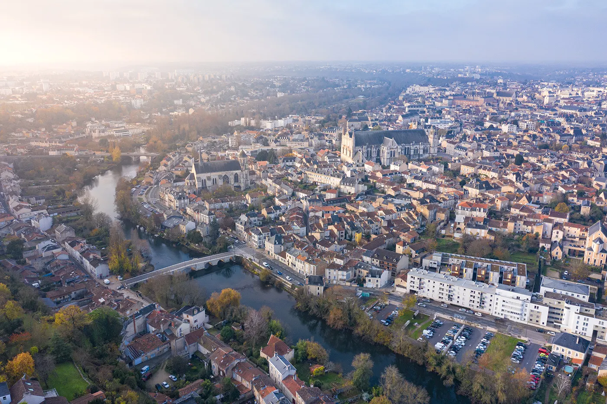
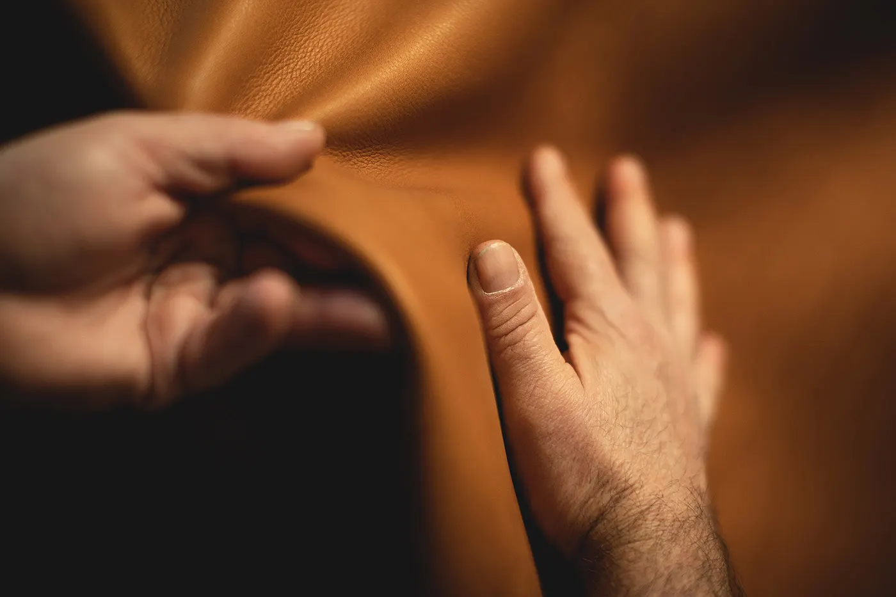
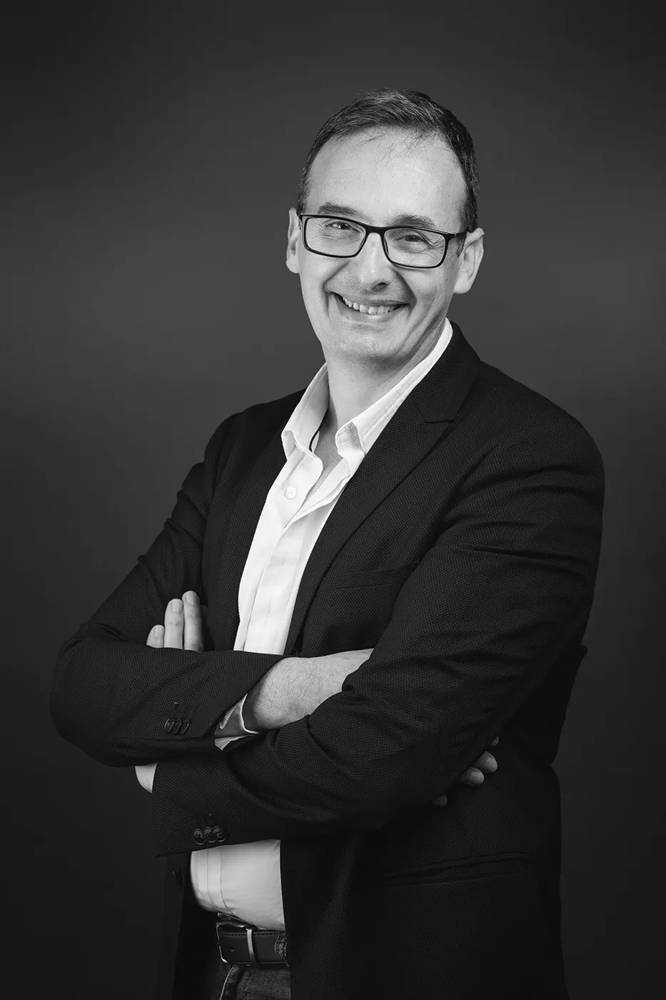
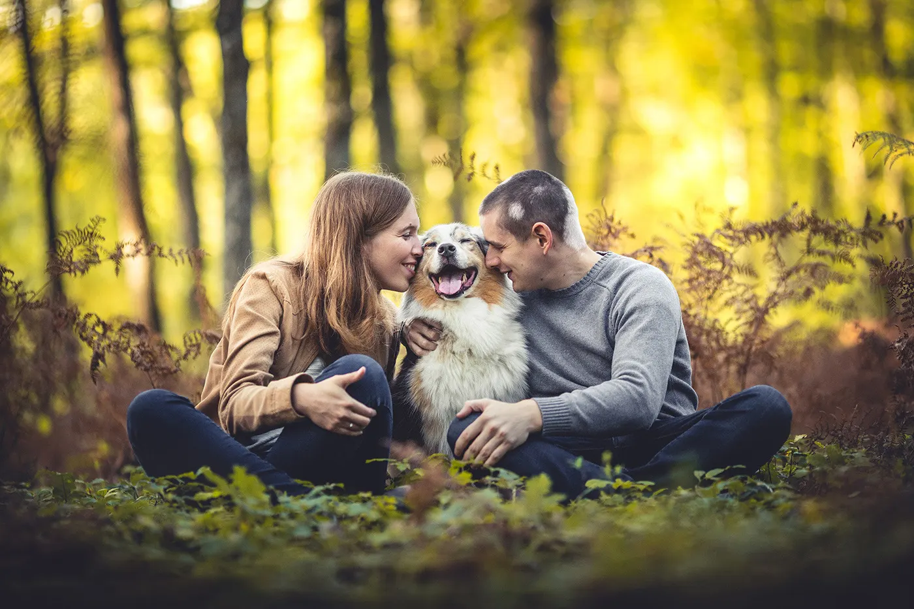
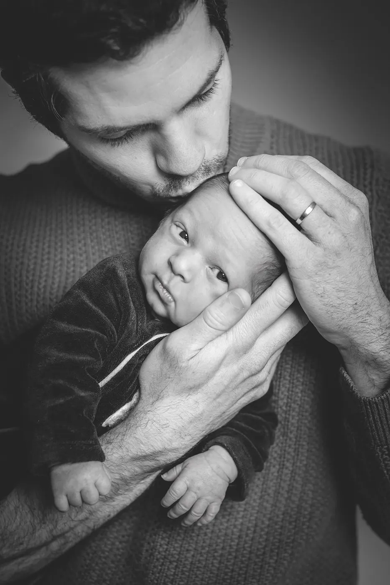
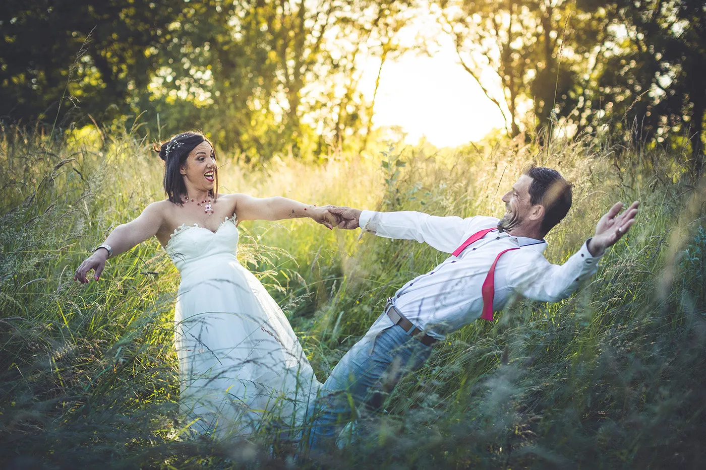
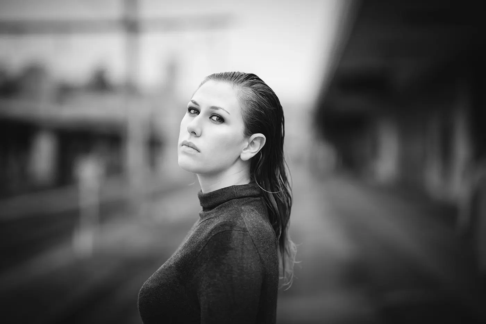
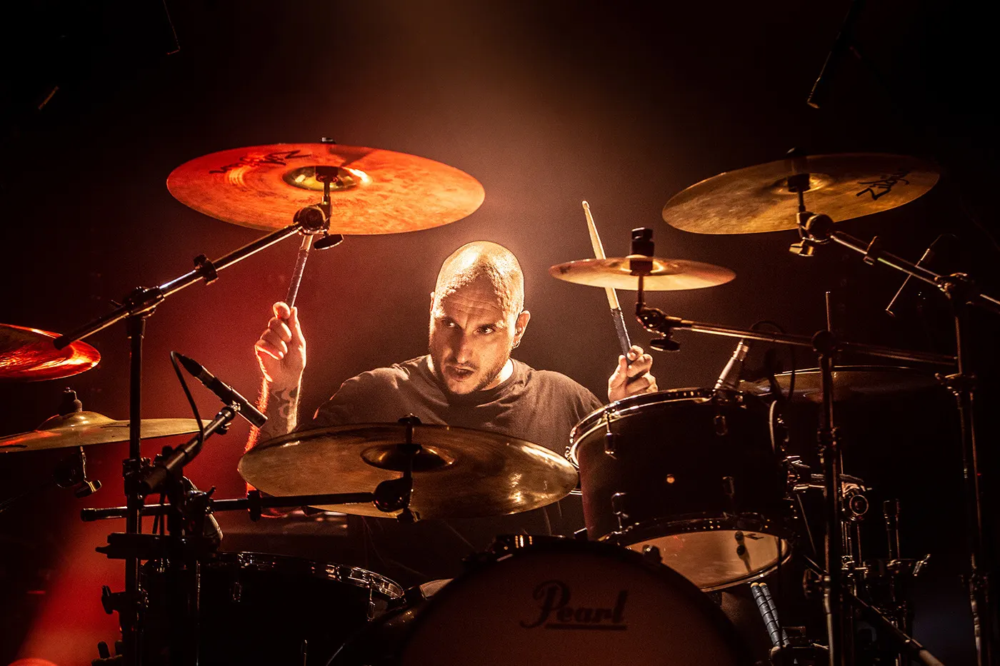
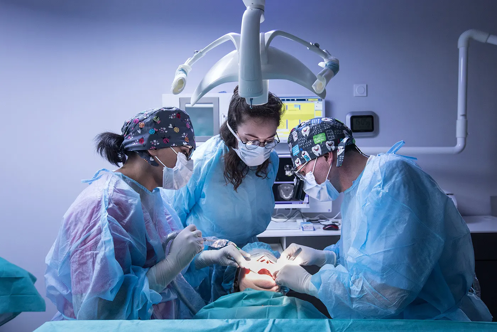

Photographe à Poitiers, du drone au portrait.
Installé à Poitiers depuis une vingtaine d'années, je photographie les entreprises et leurs évènements, les familles, les naissances et les mariages, et je prends la ville de haut, au drone.
- Poitiers et Nouvelle-Aquitaine
- Photo aérienne au drone
- Entreprise, famille, mariage
- Stages photo et Photoshop
Des images porteuses de sens pour votre organisation.
Entrepreneurs, entreprises, collectivités, administrations ou associations : je fais le reportage de vos évènements et vos portraits professionnels, pour illustrer avec justesse tous vos supports.
- Réseaux sociaux
- Rapports annuels
- Site internet
- Campagnes de publicité
- Articles de presse




Pas de sourires forcés : juste vous, votre naturel et vos émotions.
Entre frères et sœurs, avec les parents, les grands-parents ou toute la famille, du ventre rond de maman aux premiers pas de bébé. Dans un lieu que vous aimez, chez vous ou dans un petit coin de nature, nous ferons les photos qui vous ressemblent.
Toutes les photos sont remises en numérique sur un serveur privé, à télécharger et partager en ligne. Tirages, agrandissements, tableaux et posters en option.

Photographier une union, c'est raconter une histoire.
Engagement, fiançailles ou mariage, ma démarche de photo-reporter reste la même : être discret, et figer l'un des jours les plus marquants de votre vie.
« Pour moi le mot photogénique n'a pas de sens. Tout le monde est photogénique. Il suffit de trouver l'angle. Le moment. »
Guillaume Héraud
Originaire d'un petit village de Charente-Maritime, entre l'île d'Oléron et La Rochelle, j'ai fait mes premiers pas avec le vieil appareil argentique de mon père, un Minolta X700. Passionné par le règne animal et végétal, je suis venu à la macrophotographie, puis je me suis surpris à photographier de plus en plus l'Humain.
- 2013Major de promotion du D.U. de photographie nature et animalière de l'IFFCAM, à Ménigoute. Premier ouvrage numérique, « Premières Lueurs », et prix du concours photo du Fifo dans la catégorie insecte.
- 20082e prix national du concours universitaire de la photo.
- 2006 à 20091er prix régional du concours universitaire de la photo, quatre années de suite.

Sur scène, en reportage, en évènement.
Spectacles et concerts, évènements d'entreprise, reportage : de bonnes images sont indispensables à votre communication.


Stages et formations : de la prise de vue à la retouche.
Cadrer, gérer les contrastes et les couleurs, comprendre ce qui influe sur le rendu d'une image. Par des exercices sur le terrain et des temps plus théoriques, vous apprenez à maîtriser votre boîtier.
- Du parfait débutant au photographe confirmé, ou pour votre activité professionnelle
- Un boîtier plein format et plusieurs objectifs série L à disposition si vous le souhaitez
Offrez une séance photo.
Shooting, séance en famille, naissance : choisissez la séance à offrir, contactez-moi pour finaliser votre cadeau, puis recevez la carte ou faites-la envoyer directement à la personne concernée.
N'hésitez pas à m'appeler directement.
Internet est un formidable outil, mais j'apporte une grande importance aux relations humaines. Appelez-moi, ou laissez-moi votre numéro pour que je vous rappelle.
06 61 52 37 02- Téléphone
- 06 61 52 37 02
- guillaume.heraud.photographies@gmail.com
- Formulaire de contact
- guillaume-heraud.com/contact
Je ne laisse aucun message sans réponse. Les premiers échanges par mail finissent parfois dans les courriers indésirables : pensez à vérifier vos spams.